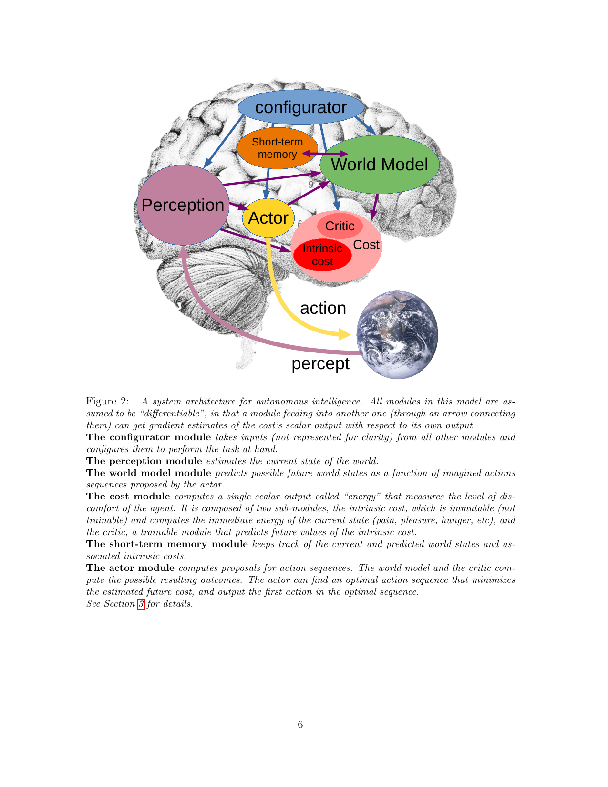
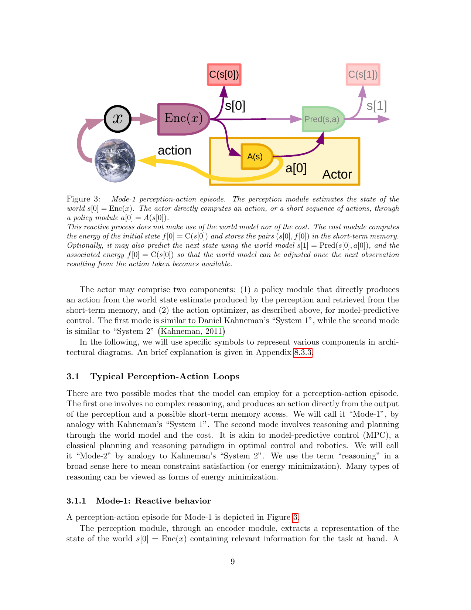
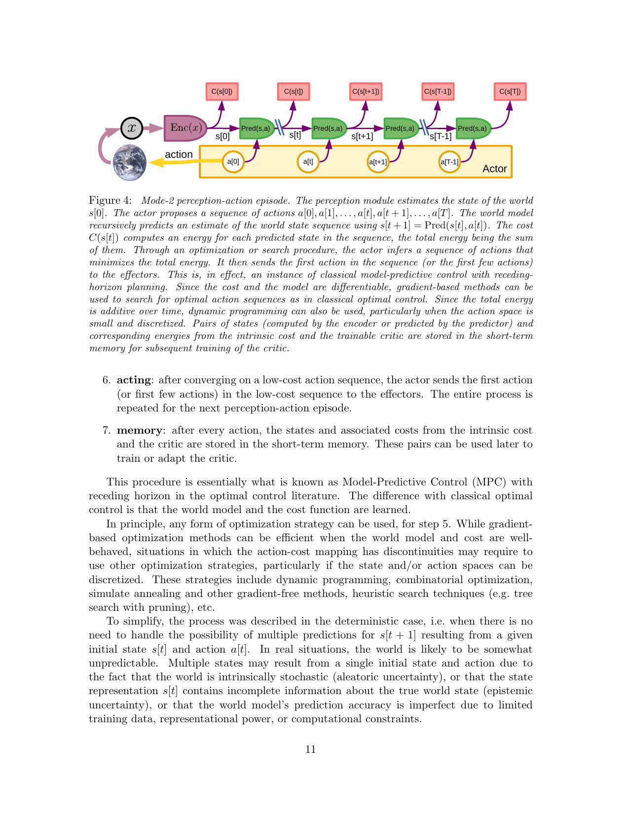
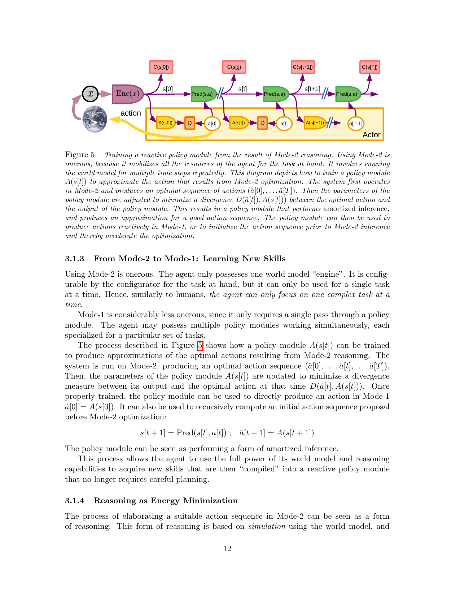
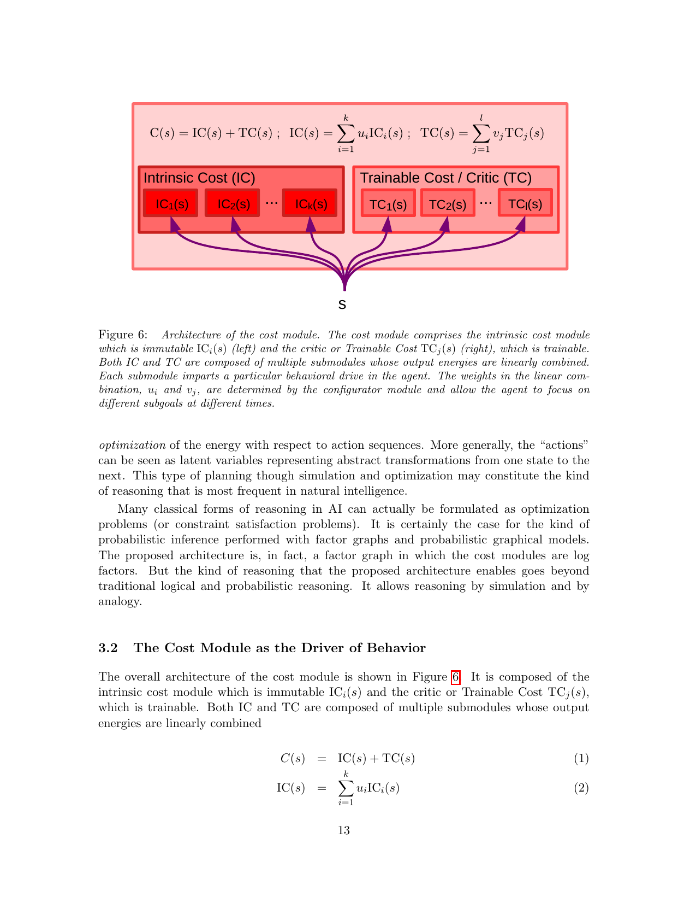
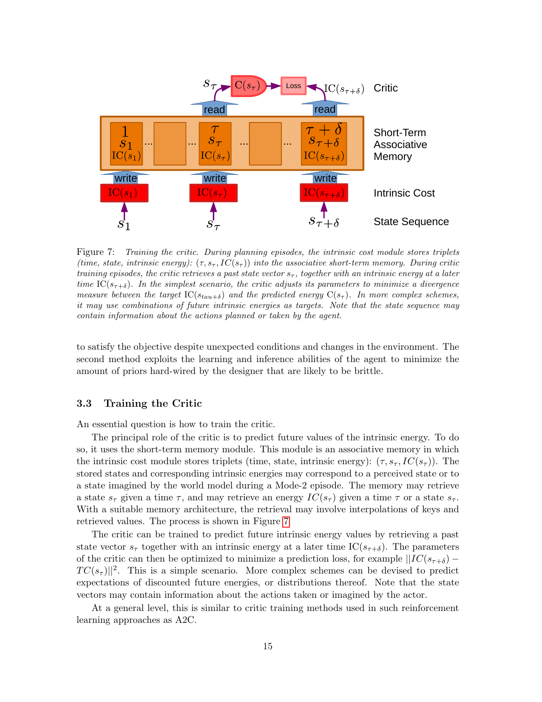

A Path Towards Autonomous Machine Intelligence
Yann LeCun · Meta AI / NYU · 2022-06-27 · Version 0.9.2
按论文章节顺序走，每一节先给中文导读（小白先看这个）， 再展开原文段落（点击折叠块），关键图直接用论文原图（Fig 2/3/4...）， 互动元素帮你看清模块之间怎么传数据。
前言 · Prologue
这不是传统意义上的"技术论文"或"学术论文"，是 LeCun 写的一份 立场报告（position paper）——他对"机器怎么才能像人和动物一样学习" 这个问题给出的一个完整方案蓝图。所以你不会看到 SOTA 实验， 会看到一套架构、为什么这么设计、以及它解决了哪些公认难题。
展开原文 · Prologue
"This document is not a technical nor scholarly paper in the traditional sense, but a position paper expressing my vision for a path towards intelligent machines that learn more like animals and humans, that can reason and plan, and whose behavior is driven by intrinsic objectives, rather than by hard-wired programs, external supervision, or external rewards."
关键词：立场报告、 内在目标、 反对"硬编码行为 + 外部奖励"的当前路线。
§1 引言 · Introduction
LeCun 开篇用两个数字甩出问题：青少年学开车大概 20 小时就上路了， 小孩学语言也只需要相对很少的接触量。可现在最好的 ML 系统呢？哪怕是稀有情况 都得在训练集里被反复刷过，才有可能可靠应对。 差距在哪？答案可能是：人和动物有"世界模型"（world model），机器没有。
展开原文 · 三大核心挑战
Three main challenges that AI research must address today:
- How can machines learn to represent the world, learn to predict, and learn to act largely by observation?
- How can machine reason and plan in ways that are compatible with gradient-based learning?
- How can machines learn to represent percepts and action plans in a hierarchical manner, at multiple levels of abstraction, and multiple time scales?
论文的四项主要贡献
- 一套整体认知架构（cognitive architecture），所有模块都可微分（Fig 2，对应本笔记 §2）
- JEPA 与 Hierarchical JEPA：一种"非生成式"的预测式世界模型架构（对应本笔记 §3）
- 一种非对比（non-contrastive）自监督学习范式
- 用 H-JEPA 作为基础做分层规划（hierarchical planning under uncertainty）
§2 模型架构 · 总览
LeCun 不直接讨论某个算法，先抛出整套智能体的脏腑图：哪些模块、谁连谁、信号怎么流。 这是 Figure 2，是后面所有讨论的"地图"。重点理解一件事： 所有模块之间的箭头都是可微分的——这意味着代价（cost）的梯度 可以反向穿越整个系统去训练每一个组件。

第 1 步：环境给出观测
右下角地球代表环境。传感器信号（论文叫 percept）通过紫色粗箭头送到 Perception 模块。这就是智能体的"看 / 听 / 摸"。
第 2 步：感知编码当前状态
Perception（紫红色大椭圆）把原始 percept 编码成"当前世界状态" s[0]。注意它是大椭圆——感知本身可能有多层抽象（边缘 → 物体 → 场景）。
而且Configurator 会引导它：同一个画面，做"找钥匙"任务时只关注小物体，做"过马路"任务时只关注车——不是把所有像素都编码下来。
第 3 步：世界模型介入
World Model（绿色，画得最大）拿到 s[0] 后做两件事：
- 补全感知没看到的信息（比如被遮挡的物体）
- 预测：如果 Actor 选动作 a，下一刻状态 s[1] 会变成什么
这是整个架构最难训练、也最关键的模块——后面整章 §3 都在讲怎么设计和训练它。
第 4 步：短期记忆参与读写
Short-term Memory（橙色小块）和 World Model 之间是双向紫色箭头。意思：World Model 在做时序预测时把中间状态写进去，等真观测到来了又读出来对照——发现预测不准就调整自己。
第 5 步：Actor 决定做什么
Actor（黄色椭圆）有两种工作方式：
- 简单模式：直接
a = A(s[0])一步出动作（System 1，靠直觉） - 规划模式：提议一整条动作序列 → 让 World Model 预测每步结果 → Cost 评估好坏 → 反传梯度优化动作（System 2，慢思考）
第 6 步：Cost 评估"好坏"
Cost（右侧红色，含 Intrinsic Cost + Critic）输出一个标量"能量"，衡量这一刻 / 这一动作有多"不爽"。
关键：Cost 的梯度可以反向传播穿过 World Model 和 Actor——这就是为什么 Actor 能在脑中优化动作。这条反向路径在图里没画，但贯穿整个系统。
第 7 步：Configurator 做总指挥
顶上的 Configurator（蓝色椭圆）不在感知-行动主路径上。它接收所有模块的输入，根据"当前任务"调制其他模块的参数和注意力。
类比：你专注做菜时，听觉对厨房噪音变敏感、对客厅电视变迟钝——这就是 Configurator 在调感知模块的"权重"。当前 LLM/VLA 系统里基本没有这个模块，是开放研究方向。
2.1 六大模块定义
点下面的 tab 切换查看每个模块：
配置器 · Configurator
接收所有其他模块的输入，根据"当前任务"（task at hand）去 调制（modulate）其他模块的参数和注意力回路。 通俗讲：上面下一个任务给智能体，配置器先去"调好"感知/世界模型/代价模块，让它们聚焦相关信息，然后才开始感知-行动循环。
原文
感知 · Perception
从传感器原始信号估计世界当前状态。论文强调一点： 对任何任务，感知到的东西里只有一小部分是相关的——所以配置器会 引导感知系统只提取"任务相关"的信息。感知输出可以分层（hierarchical）， 代表多个抽象层级。
世界模型 · World Model
整个架构里最复杂的模块。功能双重：
- 补全感知没给的信息（estimate missing information）
- 预测未来：给定 Actor 提议的动作序列，预测未来世界状态 s[1], s[2]…
它必须能表示多种可能的预测——因为现实不完全可预测。论文用 潜变量 z 来吸收"不可预测的细节"。 这个模块是后续 §3 整章 JEPA 的主角。
原文 · 关键难题
代价 · Cost
输出一个标量"能量"（energy）衡量智能体此刻"不爽"的程度。 目标：让长期平均能量最低。由两个子模块构成：
- Intrinsic Cost（内禀代价）：硬编码、不可训练。痛苦=高能量，愉悦=低能量。这是基本驱动（drives）的来源。
- Trainable Critic（可训练评论家）：预测未来的内禀代价，类似 RL 的 value function。
详细结构看 §2.5（Fig 6）。
短期记忆 · Short-term Memory
存储过去/当前/预测的世界状态和对应的内禀代价值。World Model 在做时序预测或空间补全时 读写它；Critic 从中检索历史"状态-代价"对来训练自身。 架构类似 Key-Value Memory Networks，可以视作脊椎动物海马体（hippocampus）的类比物。
行动者 · Actor
输出动作。两种工作方式：
- Policy 模式（System 1，直觉）：a[0] = A(s[0])，一步出动作，不调用 World Model。
- 优化模式（System 2，慢思考）：提议动作序列 → World Model 预测未来 → Cost 评估 → 反向传播梯度优化动作 → 找到最优序列，执行第一个。这就是 模型预测控制（MPC）。
2.2 Mode-1：反应式感知-动作
最简单的工作模式：看到 → 编码 → 直接出动作，不调用世界模型，不规划。 类比 Kahneman《思考快与慢》的"系统一"：本能反应、不假思索。 训练好了的策略就长这样——你伸手接球时不会先在脑子里 simulate 球的轨迹再决定手放哪。

从最左边的小圆 x 开始横着读，这张图就是 Fig 2 拍扁成"信号流水线"：
x（环境观测）→ Enc(x)（紫色，感知编码器）→s[0]（当前状态表示）s[0]直接进 Actor（黄色矩形里的A(s)）→ 输出a[0]→ 黄色粗箭头打回地球- 注意 World Model 和 Cost 在哪？右上角小红块
C(s[0])算了当前状态的代价，存到记忆里；右边淡色Pred(s,a)算了下一状态s[1]和它的代价C(s[1])——但颜色淡是有意的，意思是"这一步可选，不参与决策"
关键差异 vs Fig 4 (Mode-2)：这里 World Model 的预测不影响动作选择，只是为了"等下次真观测来了，校正一下 World Model 的预测准不准"。Actor 完全靠当前感知一步出动作——这就是 System 1。
展开原文 · Mode-1 描述
2.3 Mode-2：推理与规划
慢思考。Actor 提议一整个动作序列 a[0…T] → 世界模型递归预测每一步状态 s[1], s[2]…s[T] → Cost 在每一步算能量 → 总能量 F(x)=∑C(s[t]) → 用梯度反向传播去优化整个动作序列，找到最低代价的那条 → 执行第一个动作 → 重新感知 → 再来一遍。 这就是控制论里的 Model-Predictive Control（MPC）+ receding horizon， 只不过这里世界模型和代价都是学到的、可微分的，不是手写的。

关键观察：和 Fig 3 比，World Model 现在被"复制"了 T 份沿着时间排开。这不是真的有 T 个网络，而是同一个 Pred 在时间步 0, 1, ..., T 上展开（unroll），就像 RNN 的 BPTT 那样。
- 左边：
x→Enc(x)→s[0]，编码器只用一次 - 底部：Actor 提议整条动作序列
a[0], a[1], ..., a[T−1]（注意每个 a[t] 都是一个独立的可优化变量） - 中间链条：
Pred(s[t], a[t]) → s[t+1]，递归往前推，预测出整条状态轨迹 - 顶部红块：每一步算
C(s[t])，加起来F(x) = ∑ C(s[t])——这就是这条动作序列的总能量
整张图就是一张可导的计算图。沿着图反向传播 ∂F/∂a[t]，就能用梯度下降在动作空间里做优化，找到让总能量最小的那条动作序列。这就是"反向传播来规划"——和 BP 训练神经网络是同一种数学操作，只不过这次更新的不是权重，而是动作变量本身。
为什么叫 receding horizon：找到最优 â[0…T] 后只执行 â[0]，下一时刻重新感知重新规划。永远只看未来 T 步，但每步都重新算。
Mode-2 七步流程（论文原文）
- perception：s[0] = P(x)，Cost 算并存当前状态的代价
- action proposal：Actor 提议初始动作序列 (a[0],...,a[T])
- simulation：World Model 预测出 (s[1],...,s[T])
- evaluation：Cost 算总能量 F(x) = ∑C(s[t])
- planning：反传梯度，更新动作 → 得到最优序列 (â[0],...,â[T])
- acting：执行 â[0]（或前几步）
- memory：状态-代价对存入短期记忆，用于以后训练 Critic
Mode-2 等价于"推理 = 能量最小化"（reasoning as energy minimization）。 这是 LeCun 反复强调的统一视角：经典 AI 里很多形式的推理（约束满足、概率推断等） 都可以套进"找让某个能量最小的变量赋值"这个模子。
2.4 学新技能：Mode-2 → Mode-1 蒸馏
Mode-2 太累——每个动作要在脑子里 rollout + 优化一遍。论文给了一个很优雅的解决方案： 把 Mode-2 找出来的最优动作，拿去训练一个 policy 网络去模仿它。 训练好之后，下次遇到类似情况，policy 一步就给出近似最优动作（Mode-1 模式）。 这本质上就是把"思考"编译成"直觉"——人类学技能的过程：第一次开车要想每一步， 练熟了就完全不过脑了。论文管这个叫 摊销推理（amortized inference）。

这张图比 Fig 4 多了一行：底部黄色 Actor 框里现在出现了 A(s[t]) 模块和橙色的 D 块。先看上半部分——它和 Fig 4 完全一样（Mode-2 在跑：World Model 链 + Cost 链）。
- 上半部分：Mode-2 正常跑完，得到最优动作序列
â[0], â[1], ..., â[T]（这是"老师"） - 底部新加的
A(s[t])：一个 policy 网络，吃当前状态s[t]，预测一个动作（这是"学生"） - 橙色 D：divergence（差异度量），算"学生输出
A(s[t])"和"老师â[t]"的距离 - 把 D 当 loss 训练 A 的参数 → A 学会模仿 Mode-2 的最优解
训练好之后，下次遇到类似 s，A 一步给出近似 â，整套 Mode-2 计算图就不用跑了——这就是"把规划编译成反应"。论文用 摊销推理 这个术语：把一次性的、昂贵的 Mode-2 推理结果"摊销"到一个快速的 policy 网络上。
类比：新手开车每个路口都要想"先打灯再变道还是先变道再打灯"（Mode-2），开了几年后变成肌肉记忆（Mode-1）——本质上就是大脑把 Mode-2 的解蒸馏到了一个直觉策略里。
2.5 Cost 模块的内部结构
前面知道 Cost = Intrinsic Cost (IC) + Trainable Critic (TC)，这一节给出更细的结构： 每一类都由多个子模块组成，输出按权重线性组合，权重由 Configurator 设置—— 这就是为什么"同一个智能体在不同任务下行为不同"：配置器把不同子代价的权重调高调低。

底部那个 s 是输入（当前状态），扇形分发给上面所有的子模块。整张图说的就是一件事："代价"不是单一标量，而是一堆子代价的加权和。
- 左半（IC）：内禀代价子模块
IC₁, IC₂, ..., IC_k，每个对应一种"先天本能"——疼、饿、跌倒、靠近危险、好奇心⋯ 权重uᵢ把它们线性组合成IC(s) = Σ uᵢ·ICᵢ(s) - 右半（TC）：可训练的评论家子模块
TC₁, ..., TC_l，每个学着预测某种"未来代价"，权重vⱼ组合成TC(s) = Σ vⱼ·TCⱼ(s) - 顶上的总和：
C(s) = IC(s) + TC(s)就是最终的总能量
关键设计：u 和 v 由 Configurator 动态设置。这就解释了为什么"同一个智能体"能在不同任务下行为完全不同——任务 A 时 Configurator 把"找食物"的权重调高，任务 B 时把"避开人群"的权重调高。智能体本身没变，权重在变。
类比生物学：IC 类似杏仁核（amygdala）固化的本能反应（看到蛇就怕），TC 类似学习而来的情感联想（被某品牌坑过下次见到就警惕）。两者加起来构成行为驱动力。
Intrinsic Cost 设计举例（论文给的 use case）
展开原文 · 行为指定的四种方式
2.6 训练 Critic（可训练评论家）
Critic 的作用：不用真的把 World Model 跑很多步，就能预测未来的内禀代价。 训练方法：在做 Mode-2 规划的时候，把每一步的 (时刻 τ, 状态 s_τ, 内禀代价 IC(s_τ)) 这种三元组 存到短期记忆里。训练 Critic 时从记忆里抽一个 s_τ，让 Critic 预测出 δ 步之后的 IC(s_{τ+δ})—— 最小化预测值和真实值的差异。论文说这跟 RL 里 A2C 训练 critic 的思路相同。

三层从下往上看：
- 最底层 State Sequence：智能体经历的状态时序
s₁, ..., s_τ, ..., s_{τ+δ} - 中间橙色 Intrinsic Cost：每经过一个状态就算它的 IC 值（"当时多不爽"）
- 大橙色框 Short-Term Associative Memory：把"时刻 t、状态 s_t、IC(s_t)"打包成三元组存进去——注意 write 箭头是从 IC 模块往上的，意思是真实经历的代价被写入记忆
- 顶部红色 C(s_τ) → Loss ← IC(s_{τ+δ})：训练时从记忆里读两个三元组——拿出 s_τ 让 Critic 预测出
C(s_τ)（它是 TC 的输出，预测的是未来 δ 步后的代价），同时从记忆里读出真实发生的IC(s_{τ+δ})，两者算 loss
核心思想：Critic 是个"未来代价预测器"。它学到了"看到 s_τ 这种状态，δ 步之后我大概率会有多不爽"，这样规划时就不需要真的把 World Model 跑 δ 步，直接用 Critic 估个未来代价就行——大大减少 Mode-2 的计算量。
和 RL 的关系：论文明说"At a general level, this is similar to critic training methods used in such reinforcement learning approaches as A2C"——本质上就是 actor-critic RL 里的 critic，只不过这里的"奖励信号"是内禀代价而不是外部 reward。
展开原文 · Critic 训练目标
本节小结：信号流图
用 Mermaid 把 Mode-2 的一次完整 cycle 画成数据流（你可以对照 Fig 4 看）：
flowchart LR
ENV[环境 x] --> ENC[Perception
Enc x]
ENC --> S0[s 0]
S0 --> ACT{Actor
提议 a_0..T}
ACT -- 动作序列 --> WM[World Model
Pred s,a]
WM -- 预测状态 --> COST[Cost
C s_t]
COST -- 总能量 F --> OPT[反传梯度
优化 a_0..T]
OPT -. 更新 .-> ACT
ACT -- 最优 a_0 --> ENV
COST -. 写入 .-> MEM[Short-term Memory]
MEM -. 训练 .-> CRITIC[Critic TC]
CONF[Configurator] -. 调制权重 .-> ENC
CONF -. 调制 .-> WM
CONF -. 调制 .-> COST
§3 世界模型与 JEPA
下一轮会把论文 §4 整章（SSL → EBM → LVEBM → JEPA → 非对比 SSL → H-JEPA → 规划）按同样格式重写，附 Fig 8/9/10/12/13/15/16/17 原图。
§4 设计动机与局限
论文 §5+ 的设计 rationale 和未解决问题。